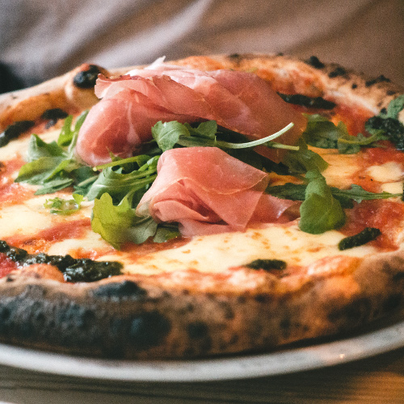

Nutre tu cuerpo
Favoritos

Historial
Baguette vietnamita
21 de noviembre, 2019
El bánh mì tiene sus orígenes en la ocupación francesa de Vietnam. Se realizaba con baguettes de trigo rellenas con paté, carnes y vegetales. Conocido inicialmente como "sándwiches franceses", la apropiación vietnamita de los ingredientes franceses permitió la incorporación de ingredientes autóctonos, como hierbas y especias, además de incorporar harina de arroz a la realización de la baguette con el fin de hacerla más esponjosa. Esto permitió abaratar los costos y se convirtió, así, en una comida popular y barata para los trabajadores pobres. A partir de la década de 1950, el bánh mì se hizo popular en las comunidades de estudiantes vietnamitas emigrados en Francia. Tras el fin de la Guerra de Vietnam, en 1975, la ola inmigratoria vietnamita hacia Estados Unidos consigo el bocadillo, que fue adaptándose a la cultura receptora

Tiene un sabor excelente aunque cuesta encontrar los ingredientes necesarios para
su elaboración, pero dejando eso de lado, es un platillo fácil de hacer y muy saludable
Pizza napolitana
23 de noviembre, 2019
La pizza napolitana, de masa tierna y delgada pero bordes altos, es la versión propia de la cocina napolitana de la pizza redonda. El término pizza napoletana, por su importancia histórica o regional, se emplea en algunas zonas como sinónimo de pizza tonda (‘pizza redonda’). Bajo la denominación pizza napoletana verace artigianale (‘pizza napolitana auténtica artesanal’) está reconocida como producto agroalimentario tradicional italiano. Las primeras referencias conservadas sobre pizza napolitana datan de 1715 a 1725. Vincenzo Corrado escribió a mediados del siglo XVIII un valioso tratado sobre los hábitos alimenticios de la ciudad de Nápoles, donde observó que la gente tenía la costumbre de guarnecer la pizza y los macarrones con tomate. La combinación de estos productos y sus comentarios dieron de hecho inicio a la reputación gastronómica de Nápoles y atribuyeron a Corrado un papel importante en la historia de la gastronomía. Estas mismas observaciones suponen la fecha de nacimiento de la pizza napolitana, un fino disco de masa con tomate.